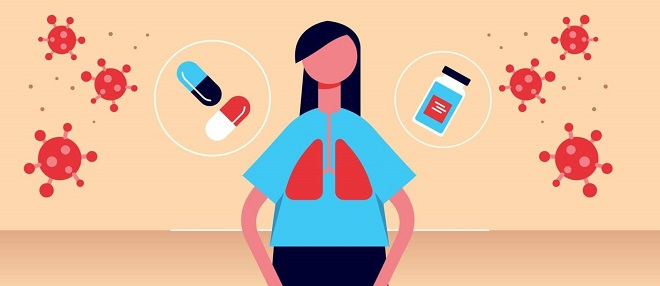

Diagnóstico e Tratamento da COVID-19

O Diagnóstico clínico
É feito através da avaliação clínica realizada pelo médico. Leva em conta os sintomas apresentados pelo paciente como:
- Febre, que pode estar presente no momento do exame clínico ou relatada pelo paciente (sensação febril), que ocorreu recentemente.
- Sintomas respiratórios (por exemplo, tosse, dispneia, coriza e dor de garganta).
- Outros sintomas consistentes incluindo:
- dores musculares, perturbações gastrointestinais (diarreia, náuseas e vômitos),
- perda ou diminuição do olfato (anosmia), ou
- perda ou diminuição do paladar (ageusia).
O Diagnóstico Laboratorial
Em conjunto com a avaliação clínica, é necessário a realização de exames laboratoriais de amostras de secreções nasais e de sangue para a confirmação da infecção.
O diagnóstico laboratorial pode ser feito utilizando a técnica RT- PCR (Real Time – Polymerase Chain Reaction) onde o DNA do vírus é detectado ou utilizando o teste sorológico, onde são detectados os anticorpos desenvolvidos durante a infecção.
Tratamento da COVID-19
Até o momento não existe um tratamento específico para o novo coronavírus. Os médicos tentam apenas tratar os sintomas e monitorar a evolução do caso.
Se tratando de casos leves, os profissionais de saúde aconselham a manter os cuidados domiciliares como hidratação, tratamento da dor e da febre por meio de antitérmicos, analgésicos e a realizar o isolamento social para evitar a propagação do vírus.
A maioria das pessoas infectadas apresenta quadros leves ou até mesmo assintomáticos e se recuperam bem dentro de alguns dias.
Algumas pessoas podem desenvolver quadros graves. Nesses casos o tratamento é feito no hospital e se necessário com a utilização de suporte respiratório.
Atenção aos sinais de gravidade:
- Febre alta e persistente
- Dificuldade para respirar e sensação de "afogamento"
- Diminuição da força física ao caminhar e se movimentar
- Confusão mental
- Queda da pressão arterial